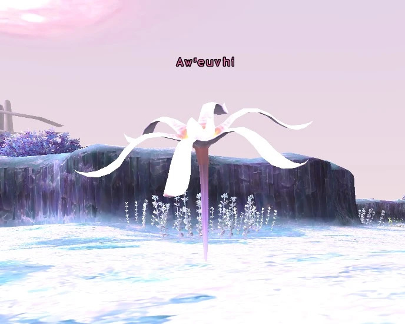

Level 75 reference · Zenith rules
|
Job: Dark Knight |
 Image source |


| Zone | Level | Drops | Steal | Spawns |
Notes |
|---|---|---|---|---|---|
|
78-80 |
119 |
L, T(H) | |||
|
9 |
See Notes | ||||
|
HP = Detects Low HP; M = Detects Magic; Sc = Follows by Scent; T(S) = True-sight; T(H) = True-hearing JA = Detects job abilities; WS = Detects weaponskills; Z(D) = Asleep in Daytime; Z(N) = Asleep at Nighttime | |||||
Notes:
- The Aw'euvhi's in Al'Taieu are Notorious Monsters and wander around the northern part of the map. Upon death, each one provides one of the three cards needed to enter Limbus. The card that is received is based on the section of the zone. All members of the alliance anywhere in zone will automatically receive the Card Key item when the mob is defeated, even if KO'd.
- The Aw'euvhi in Al'Taieu do not aggro.
- The Aw'euvhi in The Garden of Ru'Hmet give 10% more experience points than a normal mob of that level.Verification Needed
Adapted from Eden Wiki: Aw'euvhi · Contributors and history · CC BY-SA 4.0. Revision 5695. Layout, links and optional background text adapted for Zenith.